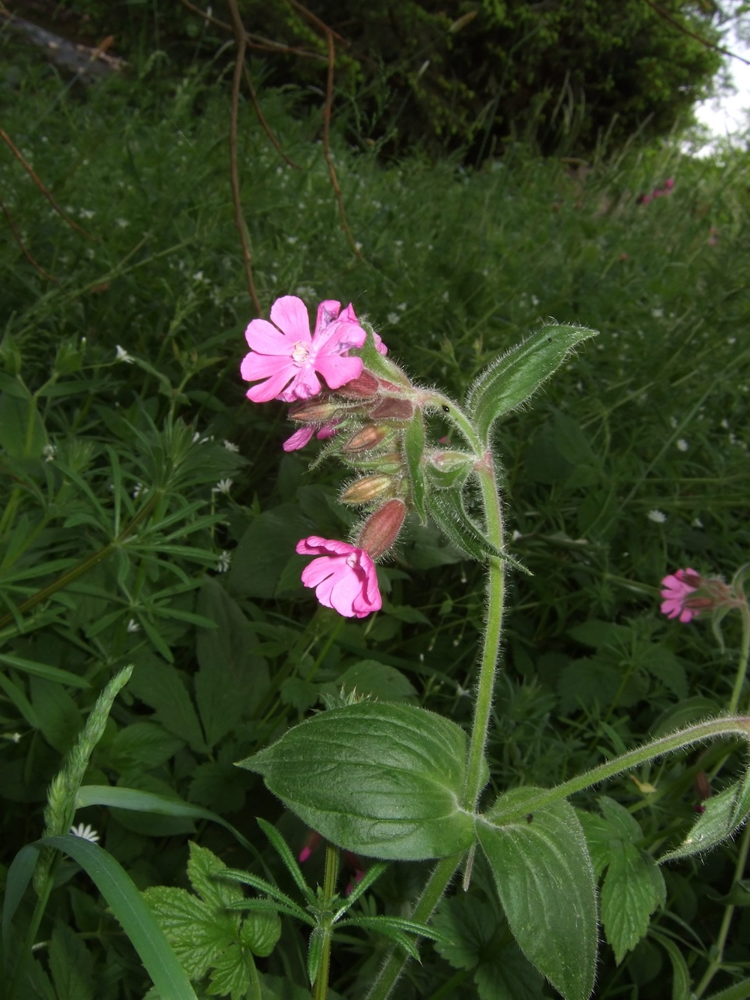
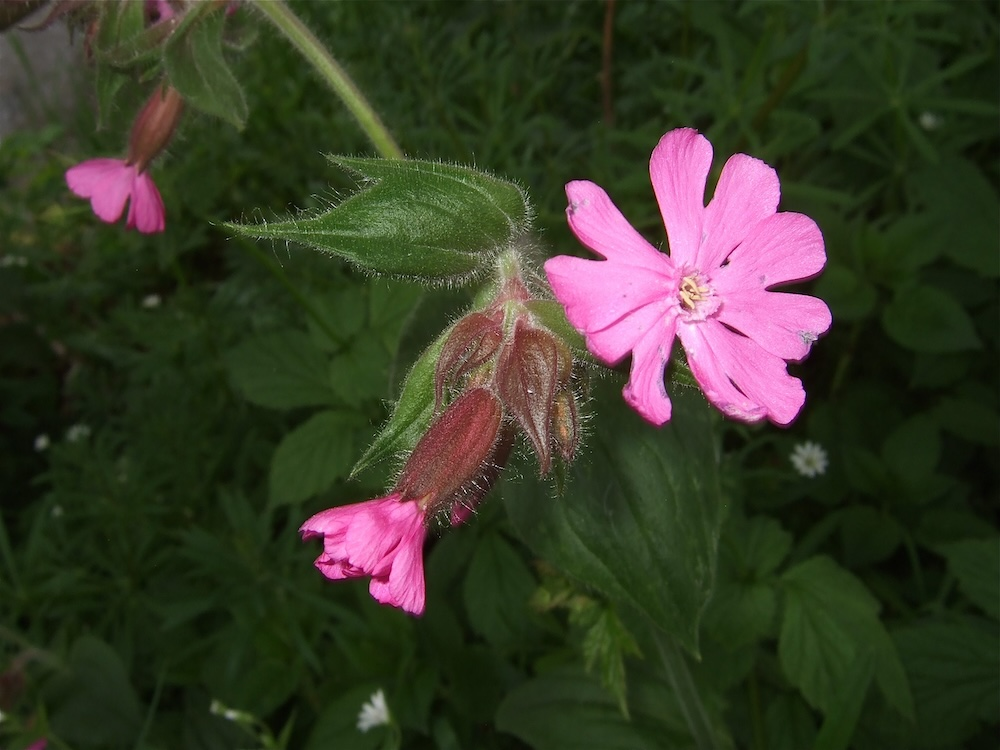

Pinkfarbene Sterne im Auwald — ein Klassiker des feuchten Halbschattens.



Männlich oder weiblich
Wie der Artname „dioica" (zweihäusig) andeutet, sind männliche und weibliche Blüten der Roten Lichtnelke auf zwei verschiedene Pflanzen verteilt. Das ist bei heimischen Pflanzen ungewöhnlich. Zur sicheren Bestäubung müssen also Insekten zwischen den Geschlechtern hin- und herfliegen — was sie auch fleißig tun, denn beide Blütentypen produzieren reichlich Nektar.
Tagblüher — der Name täuscht
Anders als ihre nahe Verwandte, die Weiße Lichtnelke (Silene latifolia), die nachts blüht und Nachtfalter anlockt, öffnet die Rote Lichtnelke ihre Blüten am Tag. Hauptbestäuber sind Tagfalter, Hummeln und Schwebfliegen. Die intensive rosa-rote Farbe ist für tagaktive Insekten besonders auffällig.
Wissenswertes & Merksätze
Erkennungszeichen
Aufrechter Stängel, weich behaart, klebrig. Blätter gegenständig, lanzettlich. Blütenkrone fünf tief eingeschnittene Blütenblätter, leuchtend rosarot bis purpur. Kelch aufgeblasen, oft rötlich.
Hybridisierung
S. dioica kreuzt sich gerne mit der Weißen Lichtnelke (S. latifolia) — Bastarde haben dann blassrosa Blüten, die teilweise auch nachts duften. In Übergangsregionen findet man oft solche Mischformen.